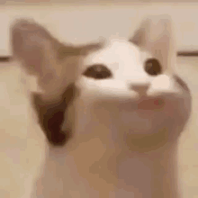

Hola Mundo! (°/o°)/
Conoce a mis mascotas
Ronroneo suave, Pelaje en mi mano se enreda, Amor incondicional. Mis mascotas son especiales.
Gatitos
Los gatos, criaturas enigmáticas y cautivadoras, han compartido nuestros hogares y corazones durante milenios. Su elegante andar, sus ojos brillantes y su ronroneo hipnótico nos han conquistado por completo. Estos felinos independientes poseen una personalidad única, a veces distantes y otras afectuosas, que los hace aún más fascinantes. Son cazadores natos, dotados de agilidad y sigilo, que mantienen a raya a los roedores y nos entretienen con sus acrobacias. Pero también son maestros del descanso, capaces de dormir durante horas en los lugares más insospechados, irradiando una paz contagiosa. Los gatos son compañeros leales, que nos ofrecen su amor incondicional y nos brindan momentos de alegría y ternura. Su presencia en nuestras vidas nos enriquece y nos recuerda la importancia de apreciar los pequeños placeres cotidianos.

Los gatos son los seres más adorables mientras no te den un zarpazo.
Lista de mis gatos
- Gruñiz
- Trigrillo - Guero
- Bowie
- Zoro
Perritos
Los perros, fieles compañeros y amigos incondicionales, han ocupado un lugar especial en nuestros corazones desde tiempos inmemoriales. Su lealtad inquebrantable, su entusiasmo desbordante y su capacidad para amar sin límites los convierten en los mejores amigos del hombre. Estos nobles animales nos ofrecen su compañía constante, nos protegen con valentía y nos brindan momentos de alegría y diversión. Son expertos en interpretar nuestras emociones, consolándonos en los momentos difíciles y celebrando nuestros triunfos con entusiasmo. Los perros son compañeros de aventuras, siempre dispuestos a acompañarnos en caminatas, juegos y exploraciones. Su energía contagiosa nos anima a mantenernos activos y a disfrutar de la naturaleza. Pero también son maestros del confort, capaces de acurrucarse a nuestro lado y brindarnos calor y afecto. Los perros son seres excepcionales que nos enseñan el verdadero significado del amor, la lealtad y la amistad. Su presencia en nuestras vidas nos enriquece y nos recuerda la importancia de valorar cada momento compartido.

Los perritos son los seres más nobles que conozco hasta que ven un plato de comida en la mesa.

Gracias por visitarnos!